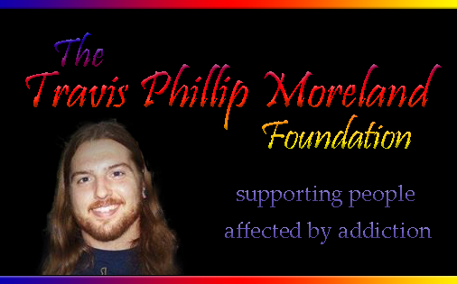

Home
WELCOME
The TPM Foundation is a 501(c)3 nonprofit organization supporting people affected by addiction with immediate help and valuable resources. We are located in Mineral County, West Virginia and serve the surrounding area.
Referral, Placement & Transportation to:
- DETOX and REHAB Facilities
- SAFE Houses and Sober Living Homes
Personal & Family Assistance:
- Food
- Clothing
- Housing
- Employment
Community Awareness:
- Identify Drug Abuse
- Prevention
- Anti-Stigma
Our HOPE
The TPM Foundation's HOPE is to host neighborhood events, acquire a vehicle to facilitate transport activity and to establish a Sober Living Home.
If you would like to become a compassionate warrior in the fight against drug abuse in Our Community, please contact Allen Moreland at 301-697-1455.
The TPM Foundation holds monthly meetings, hosts presentations, distributes contact and informational literature at conferences and rallies, and donates to areas of concern in the Community.